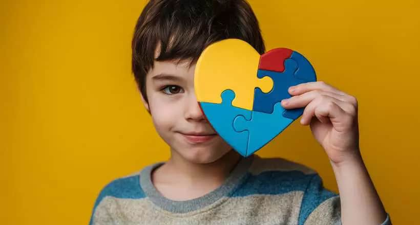

Transformando vidas com inclusão e propósito
Quem somos
A Associação Brasileira pela Inclusão Autista (ABIA) é uma organização sem fins lucrativos dedicada a ampliar oportunidades reais de inclusão para pessoas autistas em todas as fases da vida. Conectamos voluntários, doadores e parceiros a projetos que promovem autonomia, acesso à educação, saúde, trabalho e participação social para a comunidade autista e suas famílias.

Nosso impacto
Desde 2019, a ABIA já transformou a vida de mais de 3.200 pessoas autistas e suas famílias em todo o Brasil, conectando-as a projetos de educação, saúde, capacitação profissional e inclusão social. Mobilizamos uma rede de 850 voluntários e 420 doadores, que juntos viabilizaram 67 projetos em parceria com organizações locais em 12 estados. Também levamos informação confiável sobre autismo a mais de 50 mil famílias, por meio de materiais educativos, oficinas e conteúdo digital acessível.